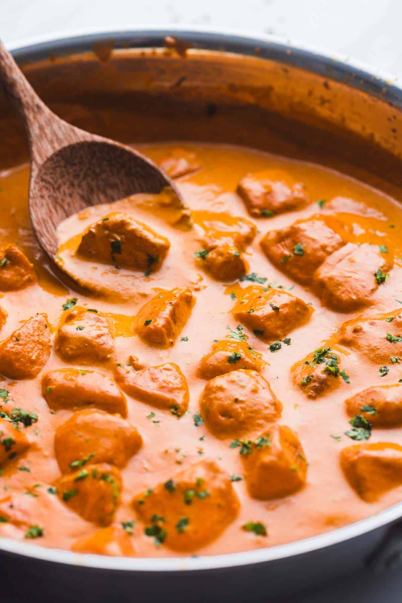

Butter Chicken

Description
Super easy and creamy butter chicken, that tastes better than any Indian take out!
Ingredients
- 1 tablespoon vegetable oil
- 2 tablespoons butter
- 2 pounds chicken breasts
- 5 cloves garlic
- 2 inch fresh ginger
- 1 teaspoon ground cumin
- 2 teaspoons garam masala
- 1/2 teaspoon chili powder
- 1 teaspoon smoked paprika
- 1 teaspoon ground tumeric
- 1 teaspoon salt
- 15 ounc can tomato sauce
- 1/2 cup heavy cream
- 2 tablespoons fresh parsley, mint, or cilantro
Steps
-
In a frying pan, heat vegetable oil and melt 1 tablespoon of butter. Brown the diced chicken breast until golden. Move the chicken to one side, and melt the rest of the butter.
- Add the garlic and ginger, and cook until fragrant (about 1 minute). Add all of the spices, and the salt, stir and cook for a minute then add the passata.
-
Give everything a mix, cover with a lid and simmer on medium heat for 5-10 minutes for the chicken to cook and the flavors to settle.
-
Carefully open the lid, and stir in the cream, and allow the sauce to reduce a little. Serve warm over rice with chopped parsley, mint, or cilantro.